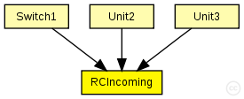
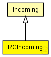

This documentation is released under the Creative Commons license
This documentation is released under the Creative Commons licenseModule for the conformance checks of incoming rate-constrained traffic.
The traffic is checked for conformance with the bag.
WARNING: Only the bag parameter is used!
See also: Incoming,
Author: Till Steinbach
The following diagram shows usage relationships between types. Unresolved types are missing from the diagram. Click here to see the full picture.
The following diagram shows inheritance relationships for this type. Unresolved types are missing from the diagram. Click here to see the full picture.
| Name | Type | Description |
|---|---|---|
| Incoming | simple module |
Abstract module for the conformance checks of incoming traffic. |
| Name | Type | Description |
|---|---|---|
| Switch1 | compound module |
switch1: configuration in switch1.ini Forwards time-triggered messages with VL-ID 100 and rate-constrained messages with VL-ID 101 |
| Unit2 | compound module |
unit2: configuration in unit2.ini. |
| Unit3 | compound module |
unit3: configuration in unit3.ini. |
| Name | Type | Default value | Description |
|---|---|---|---|
| bag | int | 0 |
Bandwidth allocation gap in number of ticks (Changes to this parameter will get active for future frames only) |
| jitter | int | 0 |
Not used |
| Name | Value | Description |
|---|---|---|
| class | RCIncoming |
RCIncoming is implemented by the RCIncoming C++ Class |
| display | i=,orange |
| Name | Direction | Size | Description |
|---|---|---|---|
| in | input |
input of the ctc |
|
| out | output |
output of the ctc |
| Name | Title | Source | Record | Unit | Interpolation Mode |
|---|---|---|---|---|---|
| ctDropped | CT violation | sum |
// // Module for the conformance checks of incoming rate-constrained traffic. // // The traffic is checked for conformance with the bag. // // @warning Only the bag parameter is used! // // @see Incoming, // // @author Till Steinbach simple RCIncoming extends Incoming { parameters: @display("i=,orange"); //RCIncoming is implemented by the RCIncoming C++ Class @class(RCIncoming); // Bandwidth allocation gap in number of ticks (Changes to this parameter will get active for future frames only) int bag = default(0); //Not used int jitter = default(0); }
This documentation is released under the Creative Commons license